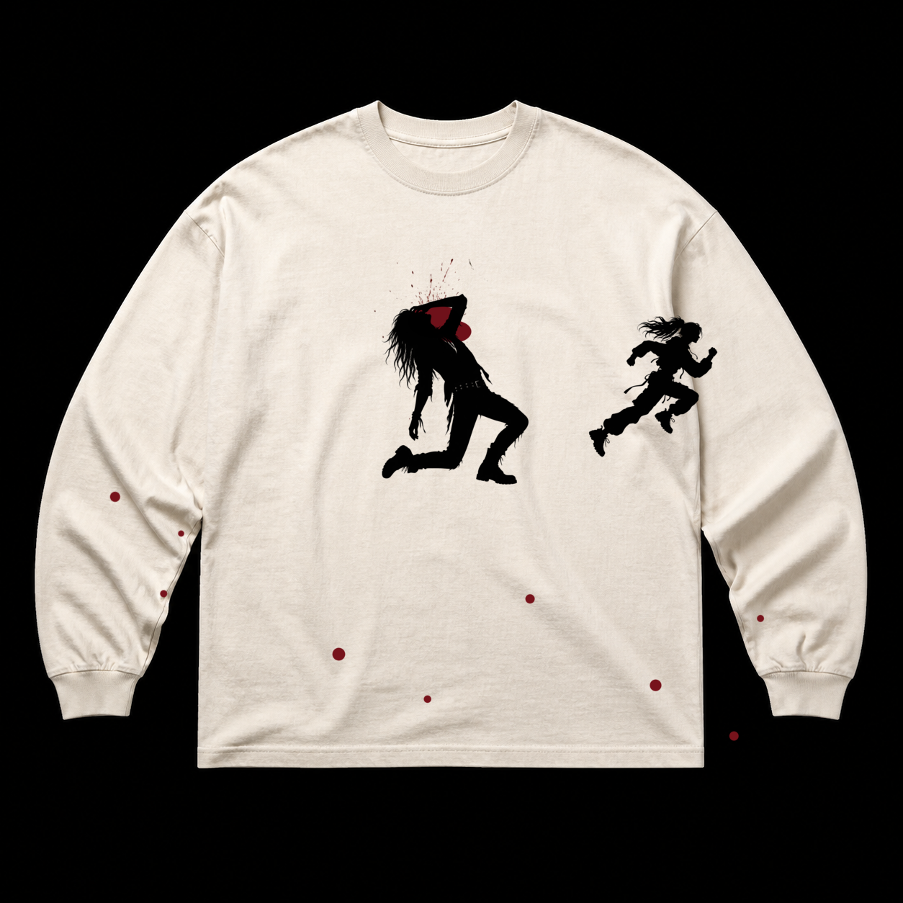

Référence · TikTok Live2die
STAY / RUN
Bone long-sleeve · noir + bordeaux
Deux silhouettes hautes, une présence qui s’effondre et une autre qui fuit. Impact organique près de la tête et projections réellement réparties entre le devant et les manches.